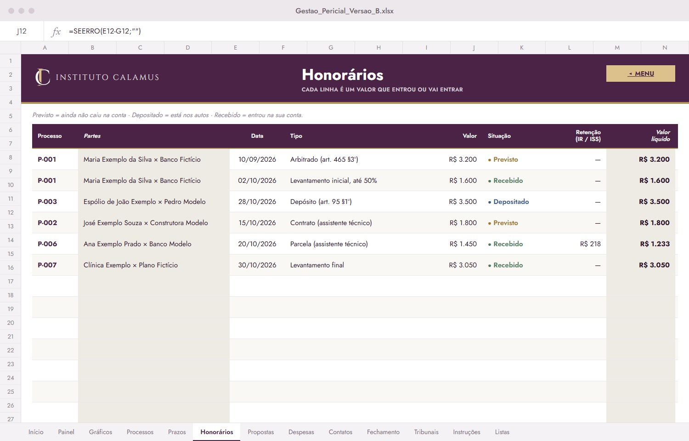
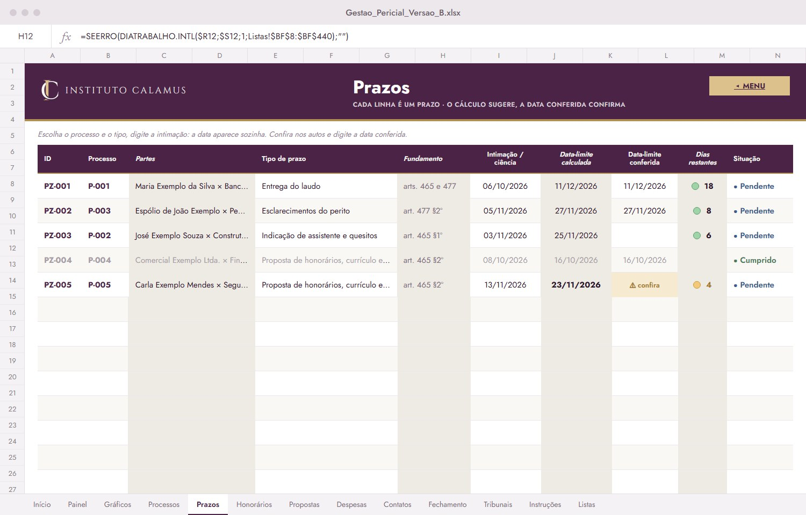
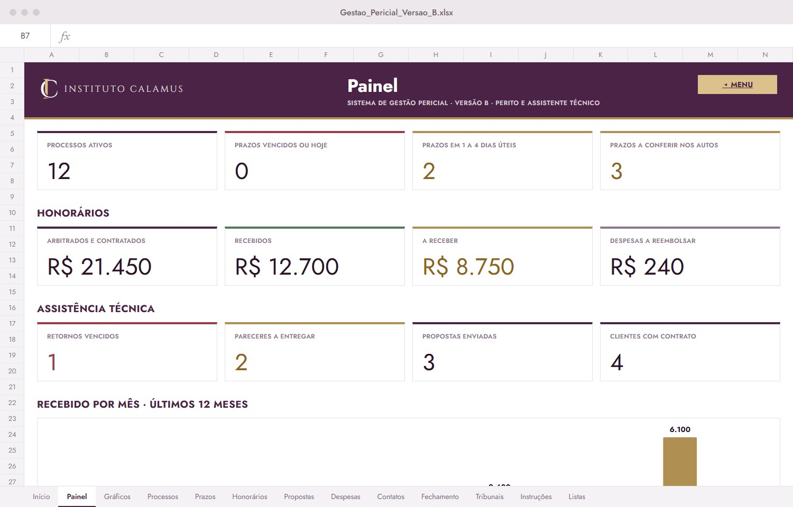

Perícia judicial · Grafoscopia · Documentoscopia
Ciência e prática da perícia
Conteúdo sobre perícia judicial, assistência técnica e a ciência por trás de cada exame, para quem atua ou quer atuar no mundo pericial.
Da origem do traço à conclusão.
Produtos para peritos
Produtos Periciais
Modelos, guias e ferramentas para cada etapa do trabalho pericial, do cadastro no tribunal à entrega do laudo.



Organização · Planilha Excel
Sistema de Gestão Pericial
Uma planilha de Excel que organiza a rotina do perito num só arquivo: processos, prazos, honorários, fechamento do mês e cadastros nos tribunais.
- Painel com o que vence e o que falta receber
- Prazos contados em dias úteis
- Propostas, despesas e fechamento do mês
- Duas versões na mesma compra: Perito e Perito + Assistente Técnico
R$ 147R$ 97Preço de lançamento
Biblioteca
Artigos
As 4 leis da escrita de Solange Pellat: o que dizem e por que você não deve usá-las no laudo
O que dizem as 4 leis da escrita de Pellat, o que a pesquisa atual confirma e por que elas não devem fundamentar o seu laudo grafotécnico.

Quanto ganha um perito grafotécnico? Honorários, tabelas e a conta de verdade
Perito judicial grafotécnico não tem salário fixo: ganha por perícia. Veja como funcionam os honorários, quanto pagam as tabelas da justiça gratuita, valores reais arbitrados pelos tribunais e como fica a conta no fim do mês.
Sobre
Instituto Calamus
O Instituto Calamus publica conteúdo e produz material de trabalho para a perícia: grafoscopia, documentoscopia e perícia judicial. Calamus é a cana de escrever, o instrumento mais antigo do traço.
Patrícia Kayo é formada em Química e perita em grafoscopia, documentoscopia e documentoscopia digital.